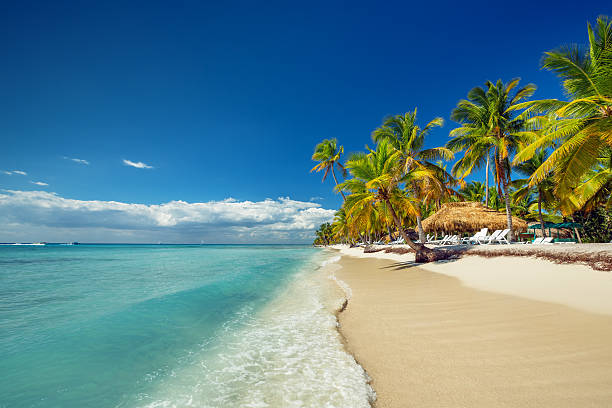

Caraibi 🍹

🏝️ Caraibi: Ritmo, Sabbia e Sole Il vasto Mar dei Caraibi è un mosaico di migliaia di isole, ognuna con un carattere distintivo, ma tutte accomunate da un'acqua di una trasparenza irreale e da spiagge di sabbia finissima. Dai ritmi inebrianti del Reggae in Giamaica, all'eleganza coloniale di Barbados, fino alle barriere coralline mozzafiato, i Caraibi offrono un'esperienza versatile che spazia dal lusso all-inclusive al più autentico ecoturismo e sono la scelta ideale per una fuga tropicale con un tocco di esuberanza culturale.
- 🎾 Attività: crociere, immersioni nei reef corallini, tour in catamarano
- 🍳 Cibo tipico: jerk chicken, riso e piselli, frutti di mare speziati
- ⭐ Luoghi iconici: Giamaica, Barbados, Saint Lucia, Bahamas